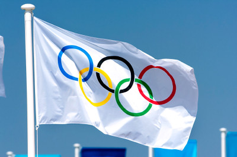
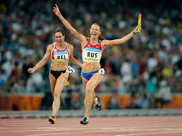
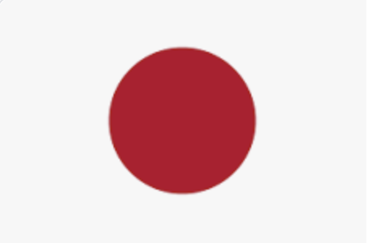
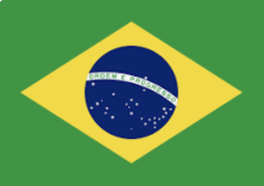

|  |
|
 |
Об Олипийских играхОлимпи́йские и́гры от греческого Ολυμπιακοί αγώνες — крупнейшие международные комплексные спортивные соревнования, которые проводятся раз в четыре года под эгидой Международного олимпийского комитета. Медаль, завоёванная на Олимпийских играх, считается одним из наивысших достижений в спорте. |
|
Традиция проведения Олимпийских игр, существовавшая в Древней Греции, зародилась как часть религиозного культа. Игры проводились с 776 года до н. э. по 393 год н. э., всего было проведено 293 Олимпиады в Олимпии, считавшейся у греков священным местом. От Олимпии произошло и название игр. |
|
Спустя несколько дней после проведения Олимпийских игр на тех же спортивных сооружениях принимаются Паралимпийские игры для людей с ограниченными возможностями. |
| Номер ОИ | Год проведения | 1-е место | 2-е место | 3-е место |
| I | 1896 | США | Королевство Греция | Германская империя |
| II | 1900 | Франиция | США | Великобритания |
| III | 1904 | США | Германская империя | Куба |
| IV | 1908 | Великобретания | США | Швеция |
| V | 1912 | США | Швеция | Великобритания |
| Первая Мировая Война | ||||
| VII | 1920 | США | Швеция | Великоьретания |
| VIII | 1924 | США | Финлянидия | Франция |
| IX | 1928 | США | Всемарская Республика | Финляндия |
| Х | 1932 | США | Королевская Италия | Франция |
| XI | 1936 | Гитлеровская Германия | США | Королевство Венгрия |
| Вторая мировая война | ||||
| Вторая мировая война | ||||
| XIV | 1948 | США | Швеция | Франция |
| XV | 1952 | США | СССР | Венгрия |
| XVI | 1956 | СССР | США | Австралия |
| XVII | 1960 | СССР | США | Италия |
| XVIII | 1964 | США | СССР | Япония |
| XIX | 1968 | США | СССР | Япония |
| XX | 1972 | СССР | США | ГДР |
| XXI | 1976 | СССР | ГДР | США |
| XXII | 1980 | СССР | ГДР | Болгария |
| XXIII | 1984 | США | Румыния | ФРГ |
| XXIV | 1988 | СССР | ГДР | США |
| XXV | 1992 | Объединённая команда | США | Германия |
| XXVI | 1996 | США | Россия | Германия |
| XXVII | 2000 | США | Россия | Китай |
| XXVIII | 2004 | США | Китай | Россия |
| XXIX | 2008 | Китай | США | Россия |
| XXX | 2012 | США | Китай | Великобритания |
| XXXI | 2016 | США | Великобритания | Китай |
| XXXII | 2020 | Перенесено на 2021 год из-за Covid-19 | ||
| XXXIII | 2024 | |||
| XXXIV | 2028 | |||
| Номер ОИ | Год проведения | 1-е место | 2-е место | 3-е место |
| I | 1924 | Норвегия | Финлянидия | Австрия |
| II | 1928 | Норвегия | США | Швеция |
| III | 1932 | США | Норвегия | Швеция |
| IV | 1936 | Норвегия | Гитлеровская Германия | Швеция |
| - | Вторая мировая война | |||
| - | Вторая мировая война | |||
| V | 1948 | Норвегия | Швеция | Швейцария |
| VI | 1952 | Норвегия | США | Финляндия |
| VII | 1956 | СССР | Австрия | Финляндия |
| VIII | 1960 | СССР | Германия | США |
| IX | 1964 | СССР | Австрия | Норвегия |
| X | 1968 | Норвегия | СССР | Франиция |
| XI | 1972 | СССР | ГДР | США |
| XII | 1976 | СССР | ГДР | США |
| XIII | 1980 | СССР | ГДР | США |
| XIV | 1984 | ГДР | СССР | США |
| XV | 1988 | СССР | ГДР | Швейцария |
| XVI | 1992 | Германия | Объеденненая команда | Норвегия |
| XVII | 1994 | Россия | Норвегия | Германия |
| XVIII | 1998 | Германия | Норвегия | Россия |
| XIX | 2002 | Норвегия | Германия | США |
| XX | 2006 | Гнрмания | США | Австрия |
| XXI | 2010 | Канада | Гермения | США |
| XXII | 2014 | Россия | Норвегия | Канада |
| XXIII | 2018 | Норвения | Германия | Канада |
| XXIV | 2022 | |||
| XXV | 2026 | |||
| Игры | Год проведения | Дата церемонии открытия | Дата церемонии закрытия | Город-организатор | Страна организатор | Количество стран | Количество видов спорта |
| I | 1896 | 6 июля | 24 июля | Афины | Греция | 14 | 9 |
| II | 1900 | 28 июля | 14 августа | Париж | Франиция | 24 | 20 |
| III | 1904 | 1 июля | 23 июля | Сент-Луис | США | 12 | 18 |
| IV | 1908 | 17 июля | 11 августа | Лондон | Великобретания | 22 | 22 |
| V | 1912 | 5 июня | 27 июля | Стокгольм | Швеция | 28 | 14 |
| Первая Мировая Война | |||||||
| VII | 1920 | 14 августа | 29 августа | Антиверпен | Бельгия | 29 | 22 |
| VIII | 1924 | 4 июля | 27 июля | Париж | Фринция | 44 | 17 |
| IX | 1928 | 26 июля | 12 августа | Амстердам | Нидерланды | 46 | 14 |
| Х | 1932 | 30 июня | 14 июля | Лос-Анджелес | США | 37 | 14 |
| XI | 1936 | 1 августа | 16 августа | Берлин | Германия | 51 | 19 |
| Вторая мировая война | |||||||
| Вторая мировая война | |||||||
| XIV | 1948 | 28 июля | 8 августа | Лондон | Великобретания | 59 | 17 |
| XV | 1952 | 14 июля | 30 июля | Хельсинки | Финлянидия | 69 | 17 |
| XVI | 1956 | 10 июня | 24 июня | Мельбурн | Австралия | 67 | 17 |
| XVII | 1960 | 15 июня | 1 июня | Рим | Италия | 83 | 17 |
| XVIII | 1964 | 1 июля | 28 июля | Тикио |  Япония | 93 | 19 |
| XIX | 1968 | 12 июля | 27 июля | Мехико |
 Мексика
Мексика
|
112 | 20 |
| XX | 1972 | 26 июня | 11 июля | Мюнхен | ФРГ | 121 | 23 |
| XXI | 1976 | 17 июля | 1 августа | Монреаль | Канада | 92 | 21 |
| XXII | 1980 | 22 июля | 13 августа | Москва | СССР | 80 | 21 |
| XXIII | 1984 | 28 июля | 16 августа | Лос-Анджелес | США | 140 | 23 |
| XXIV | 1988 | 10 июня | 2 июля | Сеул | Республика Корея | 159 | 27 |
| XXV | 1992 | 20 июля | 5 августа | Барселона | Испания | 169 | 32 |
| XXVI | 1996 | 24 июля | 10 августа | Атланта | США | 197 | 26 |
| XXVII | 2000 | 25 июня | 18 июля | Сидней | Австралия | 199 | 28 |
| XXVIII | 2004 | 3 августа | 19 августа | Афины | Греция | 201 | 28 |
| XXIX | 2008 | 8 августа | 24 августа | Пекин | Китай | 204 | 28 |
| XXX | 2012 | 25 июля | 15 августа | Лондон | Великобретания | 204 | 26 |
| XXXI | 2016 | 15 июня | 30 июня | Рио-де-Жанейро |  Бразилия | 207 | 28 |
| XXXII | 2020 | Перенесено на 2021 год из-за Covid-19 | |||||
| XXXIII | 2024 | 22 июня | 14 июнл | Париж | Франция | ||
| XXXIV | 2028 | 21 июля | 18 августа | Лос-Анджелес | США | ||